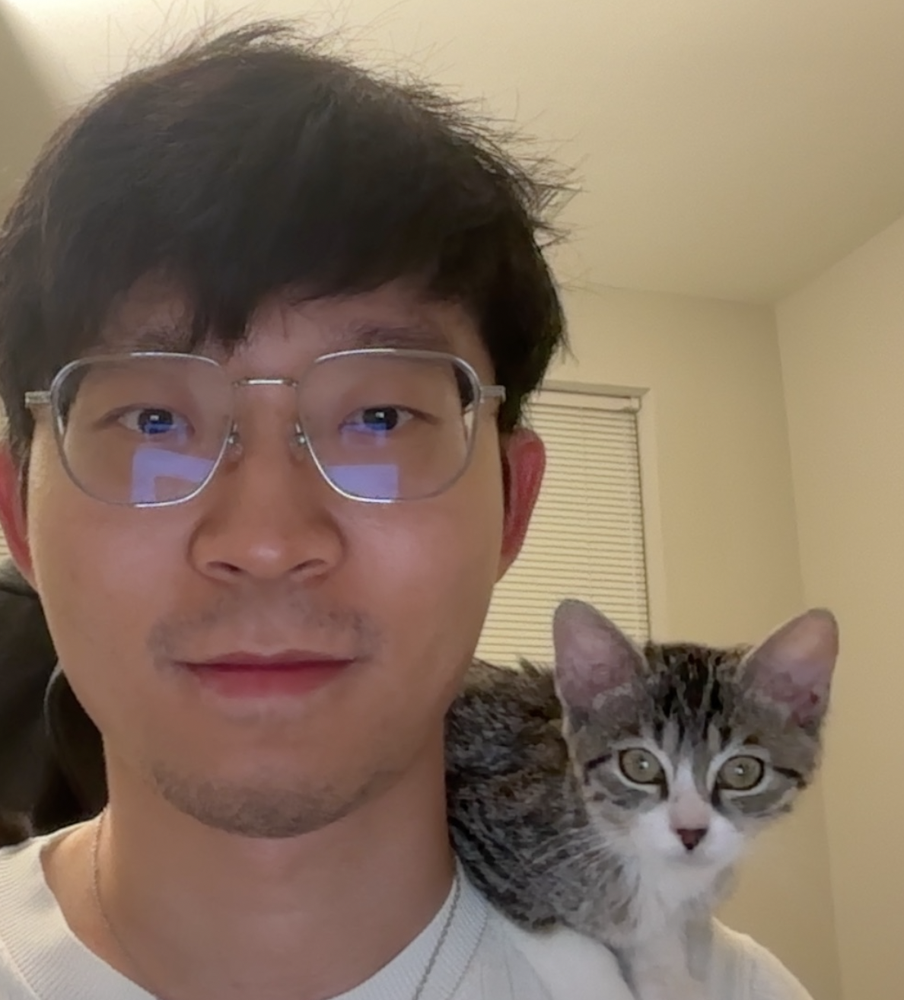
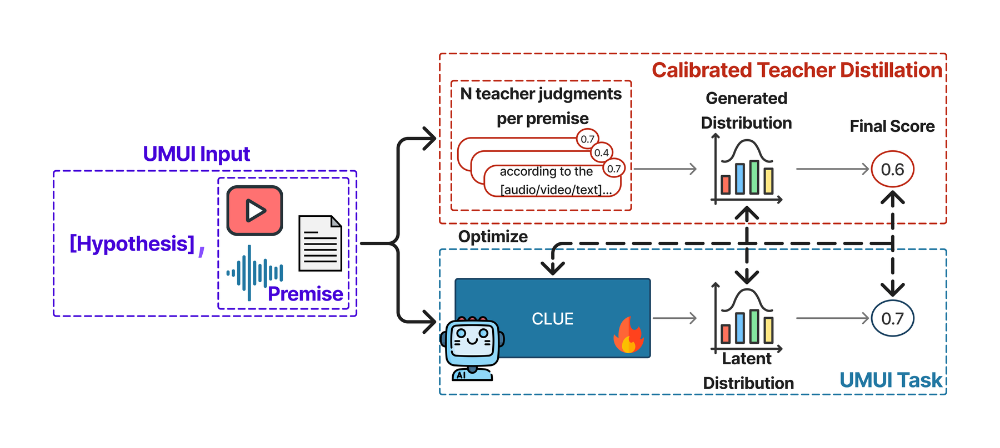
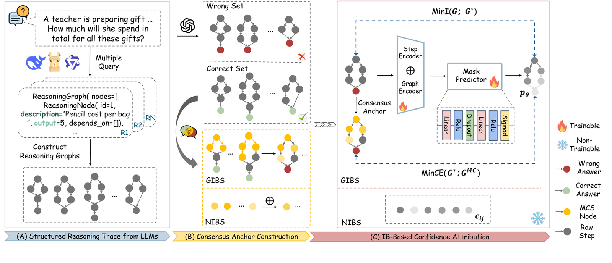
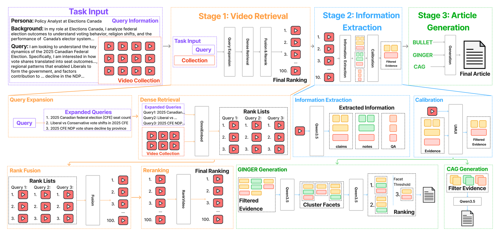
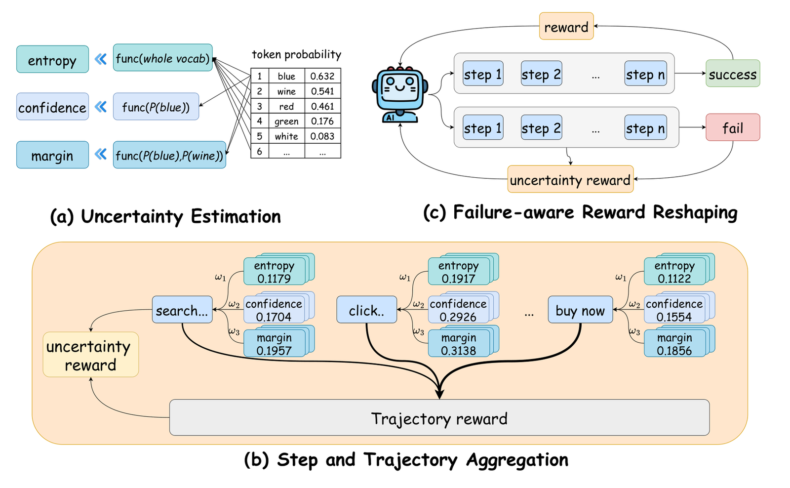
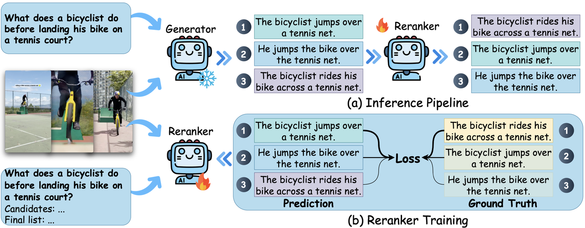
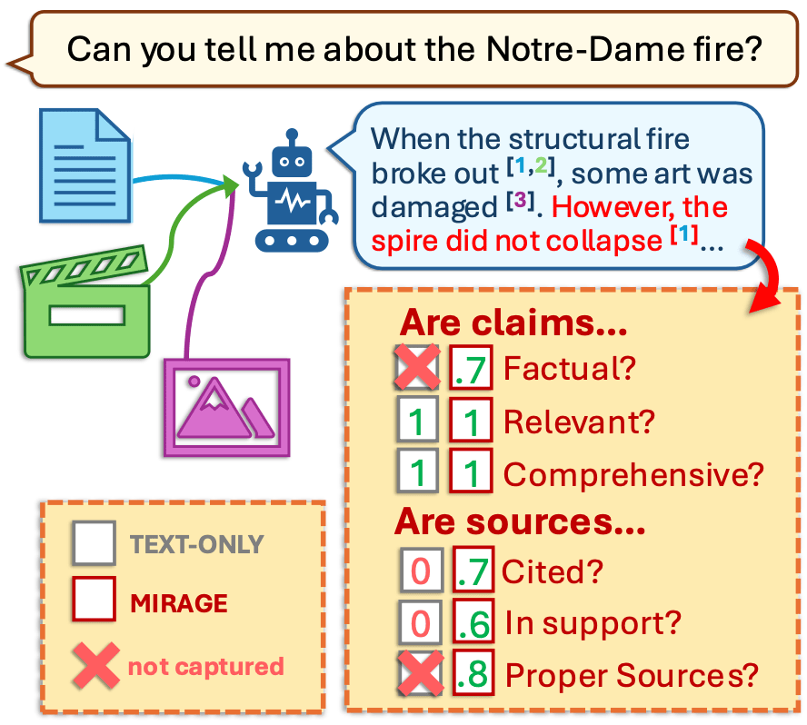

|
Dengjia Zhang 「张登甲」
I'm an incoming PhD student in Computer Science at the University of Pittsburgh, advised by Adriana Kovashka. My research interests are in multimodal understanding, uncertainty quantification for trustworthy AI, and reasoning with LLM agents.
Before that, I received my MS in Computer Science from Johns Hopkins University, where I worked with Alexander Martin, Kenton Murray, and Reno Kriz at the HLTCOE. I got my BEng in Computer Science from Beijing Jiaotong University.
Broadly, I want to use uncertainty and confidence signals inside models to make them more reliable, better calibrated, and more useful in real-world applications — from multimodal retrieval and video understanding to self-improving agents.
Besides research, I am also interested in reading, music, and movies.
Email /
CV /
Google Scholar /
GitHub
|

|
|
Publications
* denotes equal contribution. See also my Google Scholar.
|
|

|
Unified Multimodal Uncertain Inference
Dengjia Zhang, Alexander Martin, William Jurayj, Kenton Murray, Benjamin Van Durme, Reno Kriz
arXiv preprint, 2026
[arXiv]
Uncertain inference — producing calibrated probability estimates that a hypothesis holds given a premise — has been studied mostly in text, and its extension to other modalities has been limited to single-modality binary entailment judgments. We introduce UMUI, a framework for uncertain inference spanning text, audio, and video, together with a human-annotated evaluation set of probability judgments across modality combinations. We propose CLUE (Calibrated Latent Uncertainty Estimation), which combines teacher calibration with confidence probing, and show that a 3B model matches or outperforms much larger baselines across all modalities.
|
|

|
Diagnosing Multi-step Reasoning Failures in Black-box LLMs via Stepwise Confidence Attribution
Xiaoou Liu, Tiejin Chen, Dengjia Zhang, Yaqing Wang, Lu Cheng, Hua Wei
International Conference on Machine Learning (ICML), 2026
[arXiv]
Stepwise Confidence Attribution (SCA) assigns step-level confidence to closed-source LLMs using only their generated reasoning traces. Following the Information Bottleneck principle, steps that align with consensus structures across correct solutions receive high confidence while deviations are flagged as potentially erroneous, instantiated as a non-parametric variant (NIBS) and a graph-based variant (GIBS) that learns subgraphs through a differentiable mask. Across mathematical reasoning and multi-hop QA, low-confidence steps correlate strongly with actual reasoning errors, and using step-level confidence to guide self-correction improves correction success by up to 13.5% over answer-level feedback.
|
|

|
MARQUIS: A Three-Stage Pipeline for Video Retrieval-Augmented Generation
Debashish Chakraborty, Dengjia Zhang, Jialiang Jin, Hanting Liu, Katherine Guerrerio, Hanxiang Qin, Tyler Skow, Alexander Martin, Reno Kriz, Benjamin Van Durme
MAGMaR Workshop @ ACL 2026 (Oral)
[arXiv]
Retrieval-augmented generation from video requires retrieving audiovisual evidence from large corpora and synthesizing it into coherent, attributed text. MARQUIS decomposes each query into atomic sub-queries, retrieves independently over each and fuses the ranked lists before reranking, then performs calibrated structured evidence extraction and article generation. On the MAGMaR 2026 shared task it lifts retrieval from 0.195 to 0.759 nDCG@10, and its generation variants achieve the strongest citation recall among non-QA systems.
|
|

|
SELAUR: Self-Evolving LLM Agent via Uncertainty-aware Rewards
Dengjia Zhang, Xiaoou Liu, Lu Cheng, Yaqing Wang, Kenton Murray, Hua Wei
Pacific-Asia Conference on Knowledge Discovery and Data Mining (PAKDD), 2026
[arXiv] /
[Publisher]
LLMs are increasingly deployed as multi-step decision-making agents, where reward design is essential for guiding learning, yet one signal remains largely overlooked: the intrinsic uncertainty of the model itself. SELAUR folds uncertainty directly into the reward, combining entropy-, least-confidence-, and margin-based metrics into a single token-level estimate that provides dense, confidence-aligned supervision, and uses failure-aware reward reshaping to inject these signals into step- and trajectory-level rewards — extracting learning signal even from failed trajectories. On ALFWorld and WebShop it consistently improves success rates over strong baselines.
|
|

|
HLTCOE Evaluation Team at TREC 2025: VQA Track
Dengjia Zhang*, Charles Weng*, Katherine Guerrerio, Yi Lu, Kenton Murray, Alexander Martin, Reno Kriz, Benjamin Van Durme
TREC 2025, Video Question Answering (Answer Generation) Track
[arXiv] /
[Code]
A listwise learning framework for open-ended Video QA. A base multimodal model first generates multiple candidate answers for a video–question pair, which are then reranked by a model trained with a novel Masked Pointer Cross-Entropy Loss with Rank Weights, combining pointer-based candidate selection, rank-dependent weighting, and masked cross-entropy under vocabulary restriction. Bridging generative modeling with discriminative ranking yields consistent gains in accuracy and ranking stability, especially on questions requiring temporal reasoning and semantic disambiguation.
|
|

|
Seeing Through the MiRAGE: Evaluating Multimodal Retrieval Augmented Generation
Alexander Martin, William Walden*, Reno Kriz*, Dengjia Zhang, Kate Sanders, Eugene Yang, Chihsheng Jin, Benjamin Van Durme
arXiv preprint, 2025
[arXiv]
An evaluation framework for retrieval-augmented generation over multimodal sources, targeting the setting where evidence is spread across video, audio, images, and text rather than documents alone.
|
|
Academic Service
Reviewer, WACV 2025, 2026
Reviewer, MAGMaR Workshop 2025, 2026
|
|